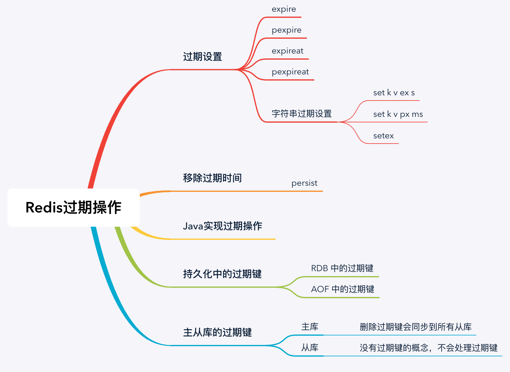

Redis 中设置过期时间主要通过以下四种方式：
下面分别来看以上这些命令的具体实现。
127.0.0.1:6379> set key value
OK
127.0.0.1:6379> expire key 100
(integer) 1
127.0.0.1:6379> ttl key
(integer) 97其中命令 ttl 的全称是 Time To Live 表示此键值在 n 秒后过期。例如，上面的结果 97 表示 key 在 97s 后过期。
127.0.0.1:6379> set key2 value2
OK
127.0.0.1:6379> pexpire key2 100000
(integer) 1
127.0.0.1:6379> pttl key2
(integer) 94524其中 pexpire key2 100000 表示设置 key2 在 100000 毫秒（100秒）后过期。
127.0.0.1:6379> set key3 value3
OK
127.0.0.1:6379> expireat key3 1573472683
(integer) 1
127.0.0.1:6379> ttl key3
(integer) 67其中 expireat key3 1573472683 表示 key3 在时间戳 1573472683 后过期（精确到秒），使用 ttl 查询可以发现在 67s 后 key3 会过期。
小贴士：在 Redis 可以使用 time 命令查询当前时间的时间戳（精确到秒），示例如下：
127.0.0.1:6379> time
1) "1573472563"
2) "248426"
127.0.0.1:6379> set key4 value4
OK
127.0.0.1:6379> pexpireat key4 1573472683000
(integer) 1
127.0.0.1:6379> pttl key4
(integer) 3522其中 pexpireat key4 1573472683000 表示 key4 在时间戳 1573472683000 后过期（精确到毫秒），使用 ttl 查询可以发现在 3522ms 后 key4 会过期。
字符串中几个直接操作过期时间的方法，如下列表：
实现示例如下：
127.0.0.1:6379> set k v ex 100
OK
127.0.0.1:6379> ttl k
(integer) 97127.0.0.1:6379> set k2 v2 px 100000
OK
127.0.0.1:6379> pttl k2
(integer) 92483127.0.0.1:6379> setex k3 100 v3
OK
127.0.0.1:6379> ttl k3
(integer) 91使用命令： persist key 可以移除键值的过期时间，如下代码所示：
127.0.0.1:6379> ttl k3
(integer) 97
127.0.0.1:6379> persist k3
(integer) 1
127.0.0.1:6379> ttl k3
(integer) -1可以看出第一次使用 ttl 查询 k3 会在 97s 后过期，当使用了 persist 命令之后，在查询 k3 的存活时间发现结果是 -1，它表示 k3 永不过期。
本文将使用 Jedis 框架来实现对 Redis 过期时间的操作，如下代码所示：
public class TTLTest {
public static void main(String[] args) throws InterruptedException {
// 创建 Redis 连接
Jedis jedis = new Jedis("xxx.xxx.xxx.xxx", 6379);
// 设置 Redis 密码(如果没有密码，此行可省略)
jedis.auth("xxx");
// 存储键值对（默认情况下永不过期）
jedis.set("k", "v");
// 查询 TTL（过期时间）
Long ttl = jedis.ttl("k");
// 打印过期日志
System.out.println("过期时间：" + ttl);
// 设置 100s 后过期
jedis.expire("k", 100);
// 等待 1s 后执行
Thread.sleep(1000);
// 打印过期日志
System.out.println("执行 expire 后的 TTL=" + jedis.ttl("k"));
}
}程序的执行结果为：
过期时间：-1
执行 expire 后的 TTL=99
可以看出使用 Jedis 来操作 Redis 的过期时间还是很方便的，可直接使用 jedis.ttl("k") 查询键值的生存时间，使用 jedis.expire("k",seconds) 方法设置过期时间（精确到秒）。
小贴士：使用 Jedis 之前，先要把 Jedis 引入到程序中，如果使用的是 Maven 项目的，直接在 pom.xml 文件中添加以下引用：
<!-- https://mvnrepository.com/artifact/redis.clients/jedis -->
<dependency>
<groupId>redis.clients</groupId>
<artifactId>jedis</artifactId>
<version>version</version>
</dependency>更多过期操作方法，如下列表：
完整示例代码如下：
public class TTLTest {
public static void main(String[] args) throws InterruptedException {
// 创建 Redis 连接
Jedis jedis = new Jedis("xxx.xxx.xxx.xxx", 6379);
// 设置 Redis 密码(如果没有密码，此行可省略)
jedis.auth("xxx");
// 存储键值对（默认情况下永不过期）
jedis.set("k", "v");
// 查询 TTL（过期时间）
Long ttl = jedis.ttl("k");
// 打印过期日志
System.out.println("过期时间：" + ttl);
// 设置 100s 后过期
jedis.expire("k", 100);
// 等待 1s 后执行
Thread.sleep(1000);
// 打印过期日志
System.out.println("执行 expire 后的 TTL=" + jedis.ttl("k"));
// 设置 n 毫秒后过期
jedis.pexpire("k", 100000);
// 设置某个时间戳后过期（精确到秒）
jedis.expireAt("k", 1573468990);
// 设置某个时间戳后过期（精确到毫秒）
jedis.pexpireAt("k", 1573468990000L);
// 移除过期时间
jedis.persist("k");
}
}上面我们讲了过期键在 Redis 正常运行中一些使用案例，接下来，我们来看 Redis 在持久化的过程中是如何处理过期键的。
Redis 持久化文件有两种格式：RDB（Redis Database）和 AOF（Append Only File），下面我们分别来看过期键在这两种格式中的呈现状态。
RDB 文件分为两个阶段，RDB 文件生成阶段和加载阶段。
从内存状态持久化成 RDB（文件）的时候，会对 key 进行过期检查，过期的键不会被保存到新的 RDB 文件中，因此 Redis 中的过期键不会对生成新 RDB 文件产生任何影响。
RDB 加载分为以下两种情况：
RDB 文件加载的源码可以在 rdb.c 文件的 rdbLoad() 函数中找到，源码所示：
/* Check if the key already expired. This function is used when loading
* an RDB file from disk, either at startup, or when an RDB was
* received from the master. In the latter case, the master is
* responsible for key expiry. If we would expire keys here, the
* snapshot taken by the master may not be reflected on the slave.
*
* 如果服务器为主节点的话，
* 那么在键已经过期的时候，不再将它们关联到数据库中去
*/
if (server.masterhost == NULL && expiretime != -1 && expiretime < now) {
decrRefCount(key);
decrRefCount(val);
// 跳过
continue;
}当 Redis 以 AOF 模式持久化时，如果数据库某个过期键还没被删除，那么 AOF 文件会保留此过期键，当此过期键被删除后，Redis 会向 AOF 文件追加一条 DEL 命令来显式地删除该键值。
执行 AOF 重写时，会对 Redis 中的键值对进行检查已过期的键不会被保存到重写后的 AOF 文件中，因此不会对 AOF 重写造成任何影响。
当 Redis 运行在主从模式下时，从库不会进行过期扫描，从库对过期的处理是被动的。也就是即时从库中的 key 过期了，如果有客户端访问从库时，依然可以得到 key 对应的值，像未过期的键值对一样返回。
从库的过期键处理依靠主服务器控制，主库在 key 到期时，会在 AOF 文件里增加一条 del 指令，同步到所有的从库，从库通过执行这条 del 指令来删除过期的 key。
本文我们知道了 Redis 中的四种设置过期时间的方式：expire、pexpire、expireat、pexpireat，其中比较常用的是 expire 设置键值 n 秒后过期。
字符串中可以在添加键值的同时设置过期时间，并可以使用 persist 命令移除过期时间。同时我们也知道了过期键在 RDB 写入和 AOF 重写时都不会被记录。
过期键在主从模式下，从库对过期键的处理要完全依靠主库，主库删除过期键之后会发送 del 命令给所有的从库。
本文的知识点，如下图所示：

https://segmentfault.com/a/1190000017776475
https://www.cnblogs.com/lukexwang/p/4710333.html